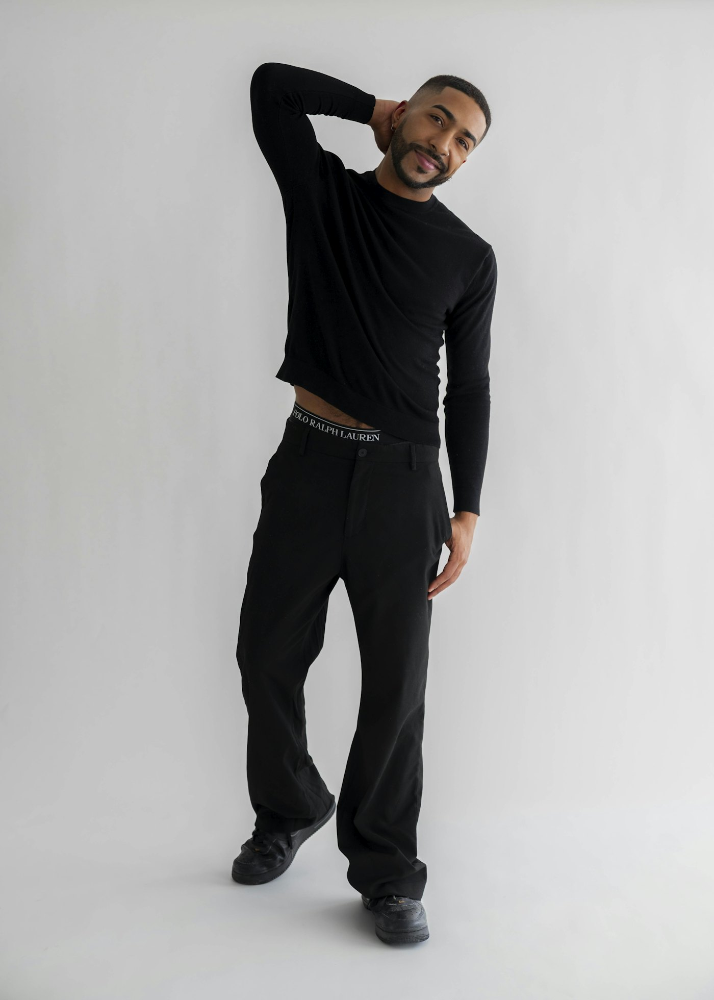
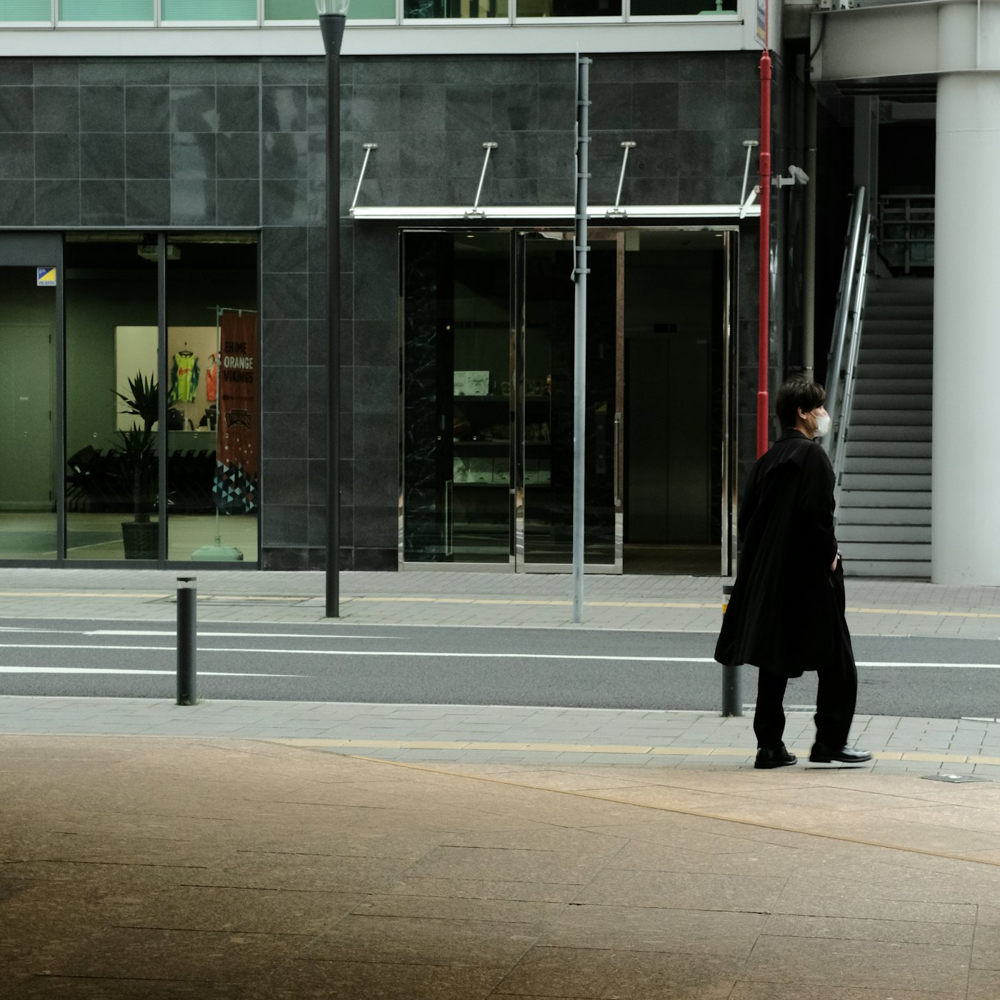
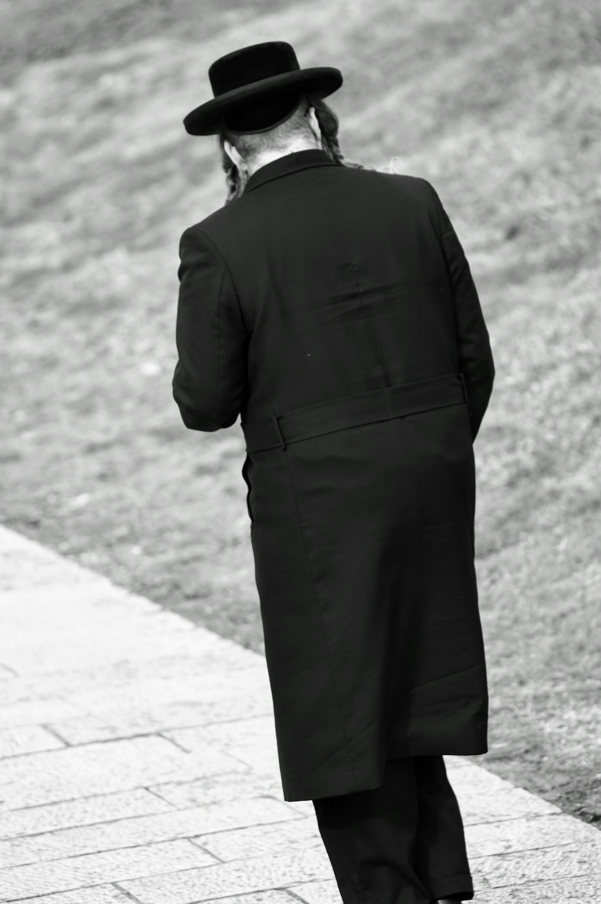
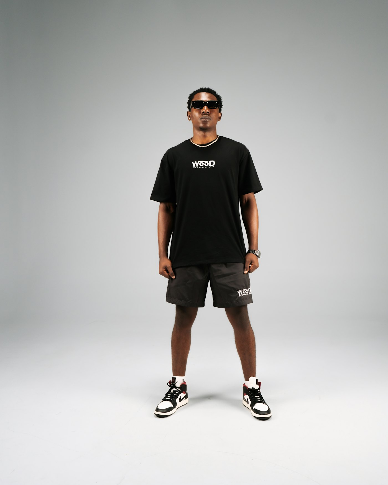
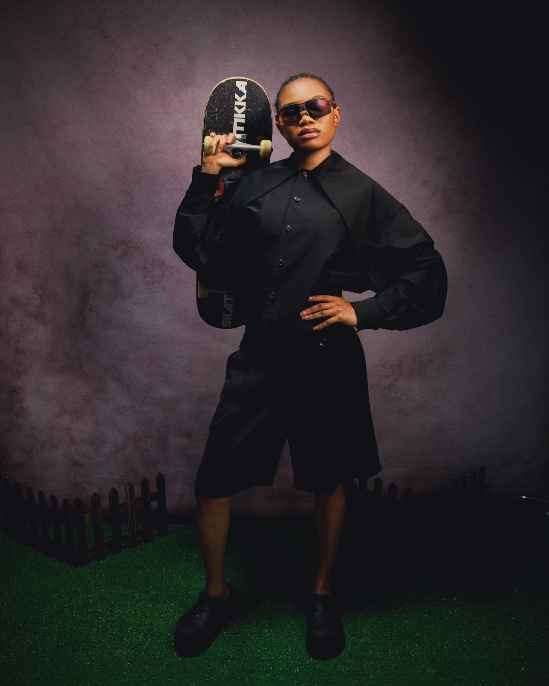

Drop 004 — The Void Series
BAD DESIGN
Oversized tailoring and technical outerwear.
Built to outlast the trend cycle.
Next release in

Series 004
The Void Series
Six pieces. Cut from the same bolt of 480 GSM loopback.
Shop now →
Series 003
Monolith
Shop now →
Editorial
Campaign 004
View →Catalogue
The collection
No pieces match that.
Atelier
Materials,
obsessed over.
We buy fabric by the roll, not the metre. Every piece is cut from a single lot so the dye lot matches across the whole run — and so the next run is honestly a different garment.
-
01
Loopback, garment-dyed
480 GSM brushed cotton, dyed after construction so the seams pull to the same depth as the panels.
-
02
Bonded, not stitched
Outer shells are fully bonded. No thread breaks the face of the garment, and nothing lets water through the shoulder.
-
03
Runs end, they don't repeat
Every drop is limited by the roll. When it's gone the pattern is archived, not re-cut.

480 GSM loopback

Bonded shell

12gg merino knit
Specimen 01 — Optical study
One surface,
folded until it repeats.
We put every fabric under the same raking light before it is signed off. This is that study, rebuilt in a shader: one height field, mirror-folded, lit from a single source, and filmed at a thickness that varies with the surface itself. The dials are real — they drive the uniform. Nothing here is a video.
Specimen unavailable
This browser can’t run WebGL, so the study is switched off. Everything else on the page still works.
Live GLSL · drag a dial · move the cursor
In the round
Drop 004,
in the round.
Turn it. The silhouette is the whole argument — how far the shoulder runs past the arm, where the waist pulls in, how the leg keeps its width all the way down. Every angle is the same garment, cut once, from one roll.
- Look
- Vespers Coat · Column Trouser
- Colourway
- Noir
- Build
- Extended shoulder, nipped waist, full column leg
- Run
- 600 pieces, numbered

3D view unavailable
This browser can’t run WebGL, so the turntable is switched off. The photograph above shows the piece.
Loading model
Drag to rotate · arrow keys work too
Editorial
Campaign 004
Shot on location. No retouching beyond dust.


Editorial imagery from Unsplash contributors, used under the Unsplash License. Not product photography — the catalogue pieces are technical flats.
Buy less. Make it last.
Make it mean something.
— BAD DESIGN, Est. 2019
Availability
Stockists
Concept storefront. No stock is held in any of these cities, and nothing ships from anywhere.
Get the drop
before it goes.
One message per release. Nothing else, ever.